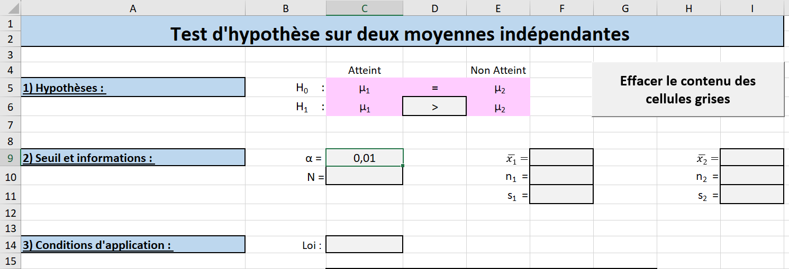
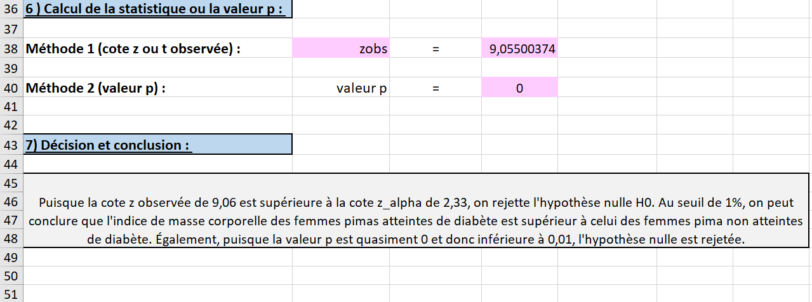

Dans ce laboratoire, l’objectif est de poursuivre l’analyse d’une base de données, soit l’étape d’inférence statistique. On souhaite répondre à des questions de recherche bien formulées et valider les hypothèse de recherche à l’aide de tests paramétriques.
Quatre bases de données seront exploitées, chacune correspondant à un test d’hypothèse spécifique. Pour le test d’hypothèse sur une moyenne, on analysera les données des précipitations totales reçues au mois de mars 2024, présentées à la Section A.5. Le test d’hypothèse sur une proportion s’appuiera sur les données démographiques des soldats de l’armée américaine disponibles à la Section A.1. Pour le test sur deux moyennes indépendantes, les données diagnostiques des femmes d’origine pima d’Arizona (voirla Section A.3) seront utilisées. Enfin, concernant le test sur deux moyennes dépendantes, une étude sur la qualité de l’air à Montréal sera réalisée avec les données présentées à la Section A.4.
Sous-section6.2.1Présentation des canevas
Les tests d’hypothèse paramétriques comportent plusieurs étapes : formuler les hypothèses nulle et alternative, préciser les informations du problème et fixer le seuil de signification, vérifier les conditions d’application du test, calculer l’écart type \(\sigma_{\bar{X}}\text{,}\) énoncer la règle de décision, calculer la statistique du test, calculer la cote \(z\) ou \(t\) observée de la statistique ou la valeur p, puis prendre une décision et conclure.
Le logiciel Excel réalise certaines de ces étapes, mais ne décompose pas toutes les phases d’un test. Ainsi, un canevas a été créé pour bien visualiser l’ensemble des étapes d’un test de manière plus détaillée. Dans cette sous-section, on explique les particularités des canevas.
La figure Figure 6.2.4 présente la configuration du canevas pour un test d’hypothèse sur une moyenne, soit la feuille Une moyenne du fichier Excel Labo6_Canevas.xlsm.
Figure6.2.1.Configuration générale d’un canevas (quatre premières étapes d’un test)Figure6.2.2.Configuration générale d’un canevas (étapes 5 et 6 d’un test)Figure6.2.3.Configuration générale d’un canevas (dernière étape d’un test)Figure6.2.4.Configuration générale d’un canevas
Les cellules ayant un fond bleu contiennent les titres de chaque étape du test d’hypothèse.
Les cellules ayant un fond rose ne peuvent pas être modifiées. À cet effet, elles sont protégées pour empêcher l’utilisateur d’y apporter des changements. Certaines de ces cellules contiennent des formules; par exemple, la cellule C22 du canevas contient la formule permettant de calculer \(\sigma_{\bar{X}}\text{.}\) Cette cellule reste vide jusqu’à ce que tous les paramètres nécessaires à son calcul ont été attribués une valeur numérique dans leurs cellules respectives. Il arrive parfois que du contenu soit effacé par erreur lors de la saisie. La protection des cellules prévient ce type d’erreur.
Les cellules ayant un fond gris et une bordure noire doivent être remplies. Certaines de ces cellules ont des menus déroulants permettant l’utilisateur de choisir une option. Par exemple, la cellule D6 contient un menu déroulant obligeant l’utilisateur de choisir le symbole approprié (\(<, >\) ou \(\neq \)) pour le type de test que ce dernier souhaite réaliser (voir la Figure 6.2.5).
Figure6.2.5.Menu déroulant de certaines cellules
Lorsqu’une cellule grisée contient un menu déroulant, l’utilisateur doit choisir une des options.
D’autres cellules grisées sont vides et doivent être remplies par l’utilisateur. Parfois, il faut y inscrire des valeurs numériques; d’autres fois, il faut y inscrire du texte. Tel est le cas pour la cellule E5. L’utilisateur doit taper la valeur numérique de \(\mu_{0}\) qu’il souhaite tester.
Certaines des cellules grisées sont accompagnées d’une boîte offrant des instructions lorsque la cellule est sélectionnée. La figure Figure 6.2.6 présente un tel exemple pour la cellule C10.
Figure6.2.6.Exemple d’un message accompagnant la sélection d’une cellule grisée
Lorsque l’on clique sur la cellule intitulée Effacer le contenu des cellules grises(voir la Figure 6.2.5), un message d’avertissement s’affiche et demande à l’utilisateur si ce dernier veut vraiment effacer tout le contenu des cellules grises. En cliquant Oui, le contenu des cellules grises est effacée.
Sous-section6.2.2Test d’hypothèse sur une moyenne
Les tests d’hypothèse sur une moyenne permettent de décider si la moyenne d’une population a changé en se basant sur une moyenne échantillonnale, c’est-à-dire de déterminer si la différence entre les deux moyennes est statistiquement significative ou si elle n’est due qu’au hasard de l’échantillonnage.
D’après les données récoltées entre 1991 à 2020 par Environnement Canada à la station météorologique de l’Aéroport international Pierre-Elliott-Trudeau de Montréal 1
, la ville de Montréal reçoit en moyenne \(77,2\) mm de précipitations totales au mois de mars, soit environ \(2,49\) mm par jour. Les précipitations totales sont la somme de la pluie totale et de l’équivalent en eau de la neige totale en millimètres. Cependant, ces dernières années, de nombreux Montréalais ont l’impression que les précipitations mensuelles sont en baisse ( 2
Calculer les mesures statistiques échantillonnales.
Pour réaliser un test d’hypothèse sur une moyenne, il faut préalablement avoir calculé les mesures statistiques de l’échantillon, c’est-à-dire la moyenne et l’écart type corrigé.
Ceci peut se faire en en utilisant les fonctions Excel MOYENNE et ÉCARTYPE.STANDARD.
Télécharger et ouvrir le classeur Données_Précipitations.xlsm.
Dans la feuille intitulée Données_Précipitations, sélectionner le tableau dans son entièreté, soit la plage de cellules F5:G36.
En suivant les étapes présentées à la Sous-sous-section 1.2.3.1, attribuer au tableau le nom « Échantillon ».
En suivant les étapes présentées à la Sous-sous-section 1.2.3.3, attribuer des noms aux deux colonnes du tableau Échantillon.
Copier le cavenas Une moyenne.
Pour effectuer un test d’hypothèse, il faut copier (importer) le canevas du fichier Labo 6_Canevas.xlsm dans le fichier Excel de travail Données_Précipitations.xlsm.
Ouvrir les fichiers Excel Données_Précipitations.xlsm et Labo 6_Canevas.xlsm.
Effectuer la procédure présentée au laboratoire 4 pour copier la feuille Une moyenne du fichier Labo 6_Canevas au classeur Données_Précipitations.
Sous-sous-section6.2.2.1Étapes d’un test sur une moyenne
Les étapes pour réaliser un test d’hypothèse sur une moyenne sont présentées. On veut tester si la quantité moyenne de précipitations reçues par jour en mars à Montréal a diminué. La valeur historique de 1991 à 2020 est de \(2,49\) mm par jour. On va se baser sur un échantillon du mois de mars 2024. On choisit un seuil de signification de \(5\%\text{.}\)
Dans le classeur Données_Précipitations, sélectionner la feuille Une moyenne.
La première étape d’un test consiste à écrire la moyenne de référence de la population, soit \(\mu_{0}\text{,}\) ainsi qu’à définir le type de test que l’on souhaite réaliser, à savoir un test unilatéral à gauche, à droite ou bilatéral. Dans la cellule E5, taper =77,2/31, soit la quantité moyenne de précipitations reçues en mars de 1991 à 2020 divisée par le nombre de jours en mars. La cellule E6 se remplit automatiquement avec la même valeur (voir la Figure 6.2.7).
Puisque notre hypothèse de recherche est que la quantité moyenne de précipitations quotidiennes a diminué, on privilégie un test unilatéral à gauche. Dans la cellule D6 de la feuille Une moyenne, il faut donc choisir le symbole \(<\) (voir la Figure 6.2.7).
Figure6.2.7.Détermination de la moyenne de référence \(\mu_{0}\) et choix de l’hypothèse alternative
Dans la deuxième étape du test, il faut remplir les cases grisées avec les informations demandées.
Choisir un seuil de \(0,05\text{.}\) Dans la cellule C9, taper =0,05 (voir la Figure 6.2.8).
Puisque la taille de la population est le nombre de jours du mois de mars (\(31\)) multipliée par le nombre d’années (\(30\)), taper =30*31 dans la cellule C10 (voir la Figure 6.2.8).
L’écart type de la population est inconnu. Ainsi, dans la cellule C11, taper inconnu (voir la Figure 6.2.8).
Il faut trouver la moyenne échantillonnale, soit \(\bar{x}\text{.}\) Dans la cellule F9, taper =MOYENNE(Précipitations) (voir la Figure 6.2.8). Précipitations est le nom attribué à la deuxième colonne du tableau Échantillon, soit la plage de cellules G5:G36.
Dans la cellule F10, taper =NB(Précipitations) pour indiquer la taille de l’échantillon (voir la Figure 6.2.8).
Dans la cellule F11, taper =ECARTYPE.STANDARD(Précipitations) pour indiquer l’écart type corrigé \(s\) de l’échantillon (voir la Figure 6.2.8).
Une fois les plages F9:F11 remplies, il est possible de constater que les cellules C20, E20 et C22 se remplissent automatiquement, les cellules étant pré-remplies avec les formules appropriées (voir la Figure 6.2.8).
Figure6.2.8.Remplissage des informations de l’étape 2
À la troisième étape, il faut vérifier les conditions d’application du test. Puisque la taille de l’échantillon est supérieure à 30, on utilise la loi normale. Dans la cellule C14, sélectionner Normale. Écrire un texte dans la cellule fusionnée C16 expliquant ce choix (voir la Figure 6.2.9).
Figure6.2.9.Choix de la loi à utiliser pour le test
L’écart type de la distribution \(\bar{X}\text{,}\) soit \(\sigma_{\bar{X}}\text{,}\) est calculé à l’aide des informations se trouvant dans les cellules C10, C11, F10, F11, C20 et C21.
À la cinquième étape, il faut écrire la règle de décision, soit avec le calcul de la statistique du test ou avec la valeur p. Dans la cellule B29, sélectionner la statistique appropriée du test unilatéral à gauche utilisant la loi normale, soit \(-z_{\alpha}\) (voir la Figure 6.2.10). Remarquer que la valeur de \(-z_{\alpha}\) (environ \(-1,645\)) dans la cellule D29 et F31 est pré-remplie et correspond bien à la cote \(z\) pour un seuil de signification de \(5\%\text{.}\)
Dans la cellule E31, sélectionner les mots appropriés parmi les trois choix du menu déroulant. Puisque l’on effectue un test unilatéral à gauche, il faut choisir les mots « plus petite que » (voir la Figure 6.2.10).
La cellule F34 est pré-remplie avec la valeur du seuil de signification pour indiquer que l’on rejette l’hypothèse nulle si la valeur p trouvée est inférieure à \(5\%\text{.}\)
Figure6.2.10.Remplissage des cellules pour l’étape 5
À la sixième étape, toutes les cases roses se remplissent automatiquement selon les informations fournies précédemment. On observe que la cote \(z_{obs}\) a une valeur d’environ \(-0,948\text{.}\) La valeur p calculée par Excel est d’environ \(0,172\) (voir la Figure 6.2.11).
Figure6.2.11.Remplissage automatique des cellules pour l’étape 6
Dans la cellule A47, écrire la décision et la conclusion du test en fonction de la règle de décision.
Figure6.2.12.Décision et conclusion du test
Sous-section6.2.3Test d’hypothèse sur une proportion
Les tests d’hypothèse sur une proportion permettent de décider si la proportion d’une population a changé en se basant sur une proportion échantillonnale, c’est-à-dire de déterminer si la différence entre les deux pourcentages est statistiquement significative ou si elle n’est due qu’au hasard de l’échantillonnage.
Selon un rapport démographique de la communauté militaire américaine 6
, en 2010, l’armée américaine comptait \(30,5\%\) de membres issus de minorités ethniques. Dans cette sous-section, on introduit les données d’un échantillon de \(6068\) membres de l’armée américaine, prélevé en 2011. On pourrait supposer que la proportion de membres issus de minorité ethnique augmente à chaque année. C’est ce que l’on va vérifier. La base de données 7
a été modifiée pour répondre aux objectifs de ce laboratoire. Dans le fichier, les ethnies des membres ont un code nominal. Le code 1 signifie une personne blanche, les codes 2 à 7 correspondent aux personnes issues de minorités ethniques.
Calculer la proportion échantillonnale.
Pour réaliser un test d’hypothèse sur une proportion, il faut préalablement avoir calculé la proportion échantillonnale.
Ceci peut se faire en générant un tableau croisé dynamique.
Ouvrir le classeur Données_Armée.xlsm.
Dans la feuille intitulée Données_Armée, sélectionner le tableau dans son entièreté, soit la plage de cellules A5:I6073.
En suivant les étapes présentées à la Sous-sous-section 1.2.3.1, attribuer au tableau le nom « Échantillon ».
En suivant les étapes présentées à la Sous-sous-section 1.2.3.3, attribuer des noms à toutes les colonnes du tableau Échantillon.
En suivant les étapes présentées à la Sous-sous-section 1.2.8.1, générer, dans une nouvelle feuille de calcul intitulé TCD_Ethnie, un tableau croisé dynamique vide à partir du tableau Échantillon. Placer ce tableau dans la cellule A3.
Glisser et déposer la variable Ethnie dans la zone de saisie Lignes (voir la Figure 6.2.13).
Figure6.2.13.Tableau croisé dynamique de la répartition de l’échantillon de 6068 membres de l’armée américaine selon leur ethnie en 2011
Glisser et déposer la variable Ethnie dans la zone de saisie Valeurs (voir la Figure 6.2.13).
On s’intéresse au pourcentage total des codes 2 à 8. Il est possible de regrouper ces modalités pour trouver la proportion échantillonnale. Sélectionner les cellules A5:B10 (voir la Figure 6.2.14).
Figure6.2.14.Tableau croisé dynamique final
Cliquer sur le bouton de droite de la souris et sélectionner l’onglet Grouper (voir la Figure 6.2.14). Le groupe 1 dans le tableau croisé dynamique regroupe tous les membres issus de minorités ethniques. La proportion échantillonnale est de \(37,51\%\text{.}\)
Copier le cavenas Une proportion (normale).
Pour effectuer un test d’hypothèse, il faut copier le canevas dans le fichier de travail.
Ouvrir les fichiers Excel Données_Armée.xlsm et Labo 6_Canevas.xlsm.
Effectuer la procédure présentée au laboratoire 4 pour copier la feuille Une proportion du fichier Labo 6_Canevas au classeur Données_Armée. Placer cette feuille en dernière position.
Sous-sous-section6.2.3.1Étapes d’un test sur une proportion
Les étapes pour réaliser un test d’hypothèse sur une proportion sont présentées. On veut tester si la proportion de membres de l’armée américaine issus de minorités ethniques a augmenté en 2011 versus 2010. On choisit un seuil de \(5\%\text{.}\)
Dans le classeur Données_Armée.xlsm, sélectionner la feuille Une proportion (normale).
La première étape d’un test consiste à écrire la proportion de référence de la population, ainsi qu’à définir le type de test que l’on souhaite réaliser, à savoir un test unilatéral à gauche, à droite ou bilatéral. Dans la cellule E5, taper la valeur \(0,305\text{.}\) On a choisi d’écrire les mesures en décimales. La cellule E6 se remplit automatiquement avec la même valeur (voir la Figure 6.2.15).
Puisque notre hypothèse de recherche est que la proportion de membres de l’armée américaine issus de minorités ethniques a augmenté, on privilégie un test unilatéral à droite. Dans la cellule D6 de la feuille Une proportion (normale), il faut donc choisir le symbole \(>\) (voir la Figure 6.2.15).
Figure6.2.15.Détermination de la proportion de référence \(\pi\) et choix de l’hypothèse alternative
Dans la deuxième étape du test, il faut remplir les cases grisées avec les informations demandées.
Choisir un seuil de \(0,05\text{.}\) Dans la cellule C9, taper =0,05(voir la Figure 6.2.16).
Puisqu’on ne connaît pas la taille de la population de l’armée américaine, on suppose qu’elle est grande. Selon le rapport démographique de 2020, il y avait au moins \(400 000\) membres en 2010. Ainsi, le test ne requière pas de facteur de correction. Dans la cellule C10, taper le mot « grande » (voir la Figure 6.2.16).
Il faut indiquer la proportion échantillonnale de \(P\text{.}\) On peut la copier de la feuille TCD_Ethnie ou simplement recopier la valeur manuellement. Dans la cellule F9 de feuille Une proportion, taper =0,3751 (voir la Figure 6.2.16).
Dans la cellule F10, taper =6068 pour indiquer la taille de l’échantillon (voir la Figure 6.2.16).
Une fois les plages F9:F10 remplies, il est possible de constater que les cellules C20, E20 et C22 se remplissent automatiquement, les cellules étant pré-remplies avec les formules appropriées (voir la Figure 6.2.16).
Figure6.2.16.Remplissage des informations de l’étape 2
À la troisième étape, il faut vérifier les conditions d’application du test. Puisque la taille de l’échantillon est supérieure à 30 et que les produits \(n\pi\) et \(n(1-\pi)\) sont supérieurs à 5, on utilise la loi normale. Écrire un texte dans la cellule fusionnée C16 expliquant ce choix (voir la Figure 6.2.17).
Figure6.2.17.Choix de la loi à utiliser pour le test
L’écart type de la distribution \(P\text{,}\) soit \(\sigma_{P}\) dans la cellule C22, est calculé à l’aide des informations se trouvant dans les cellules E5, F10, C20, C21.
À la cinquième étape, il faut écrire la règle de décision, soit avec le calcul de la statistique du test ou avec la valeur p. Dans la cellule B29, sélectionner la statistique appropriée du test unilatéral à droite utilisant la loi normale, soit \(z_{\alpha}\text{.}\) Remarquer que la valeur de \(z_{\alpha}\) (environ \(1,645\)) dans la cellule D29 et G31 est pré-remplie et correspond bien à la cote \(z\) pour un seuil de signification de \(5\%\) (voir la Figure 6.2.18).
Dans la cellule E31, sélectionner les mots appropriés parmi les trois choix du menu déroulant. Puisque l’on effectue un test unilatéral à droite, il faut choisir les mots « plus grande que » (voir la Figure 6.2.18).
Figure6.2.18.Remplissage des cellules pour l’étape 5
À la sixième étape, toutes les cases roses se remplissent automatiquement selon les informations fournies précédemment (voir la Figure 6.2.19).
Dans la cellule A47, écrire la décision et la conclusion du test en fonction de la règle de décision (voir la Figure 6.2.19).
Figure6.2.19.Décision et conclusion du test
Sous-section6.2.4Test d’hypothèse sur deux moyennes indépendantes
Les tests d’hypothèse sur deux moyennes indépendantes, aussi appelés des tests sur la comparaison ou la différence de deux moyennes, permettent de comparer les moyennes de deux populations à partir de deux moyennes échantillonnales, c’est-à-dire de déterminer si la différence entre les deux moyennes est statistiquement significative ou si elle n’est due qu’au hasard de l’échantillonnage.
Pour réaliser un test sur deux moyennes indépendantes, il faut s’assurer que les deux échantillons sont sélectionnés indépendamment l’un de l’autre.
Dans cette sous-section, on revient sur l’une des questions de recherche du laboratoire 3, à savoir si les femmes d’origine pima d’Arizona atteintes de diabète ont un indice de masse corporelle moyen plus élevé que celui des femmes non atteintes de cette maladie. Les deux échantillons (femmes avec diabète et femmes sans diabète) sont bien indépendants.
Calculer les mesures statistiques échantillonnales.
Pour réaliser un test d’hypothèse sur deux moyennes, il faut préalablement avoir calculé les mesures statistiques de chaque échantillon, c’est-à-dire leur moyenne et leur écart type corrigé respectif.
Heureusement, à la Sous-sous-section 3.2.2.3, les indices de masse corporelle moyens pour les femmes atteintes et non de diabète ont déjà été calculés, ainsi que les écarts types corrigés respectifs. Ils sont présentés à la Figure 3.2.99. On est en mesure d’effectuer le test.
Remarque6.2.20.Filtrage de données aberrantes.
Lors d’un test d’hypothèse paramétriques, il est important de filtrer les données aberrantes avant de calculer les mesures descriptives. Dans le cas des données diagnostiques des femmes d’origina pima, un filtrage est nécessaire si l’on veut les moyennes et les écarts types corrigés sans tenir compte des valeurs nulles de l’indice de masse corporelle.
Copier le cavenas 2 moyennes indépendantes.
Ouvrir les fichiers Excel Données_Diabète.xlsm, le fichier complété du laboratoire 3, et Labo 6_Canevas.xlsm.
Effectuer la procédure présentée au laboratoire 4 pour copier la feuille 2 moyennes indépendantes du fichier Labo 6_Canevas au classeur Données_Diabètes.
Placer la feuille 2 moyennes indépendantes en dernière position si Excel ne le fait pas pas défaut.
Sous-sous-section6.2.4.1Étapes d’un test sur deux moyennes indépendantes
Les étapes pour réaliser un test d’hypothèse sur deux moyennes indépendantes sont présentées.
Il faut définir \(X_{1}\) et \(X_{2}\text{.}\) Soit \(X_{1}\text{,}\) les femmes d’origine pima d’Arizona atteintes de diabète, et soit \(X_{2}\text{,}\) les femmes d’origine pima d’Arizona sans diabète. Pour se souvenir de ce choix, il est pertinent de taper dans la cellule C4 « Atteint », et « Non Atteint » dans la cellule E4 (voir la Figure 6.2.21).
La première étape d’un test consiste à choisir le type de test que l’on souhaite réaliser, à savoir un test unilatéral à gauche, à droite ou bilatéral. Puisque notre hypothèse de recherche est que les femmes d’origine pima atteintes de diabètes ont un indice de masse corporelle moyen supérieur à celui des femmes non atteintes, on privilégie un test unilatéral à droite. Dans la cellule D6 du canevas, il faut donc choisir le symbole \(>\) (voir la Figure 6.2.21).
Figure6.2.21.Remplissage des cellules pour la première étape d’un test sur deux moyennes indépendates
Dans la deuxième étape du test, il faut remplir les cases grisées avec les informations demandées.
Choisir un seuil de \(0,01\text{.}\) Dans la cellule C9, taper =0,01 (voir la Figure 6.2.22).
Puisqu’on ne connaît pas la taille de la population des femmes d’origine pima vivant en Arizona, on suppose qu’elle est grande. Dans la cellule C10, taper le mot « grande » (voir la Figure 6.2.22).

Figure6.2.22.Remplissage du seuil de signification \(\alpha\) et de la taille de la population \(N\)
Pour les mesures descriptives échantillonnales de \(X_{1}\) et \(X_{2}\text{,}\) on utilise les valeurs calculées qui se trouvent dans la feuille Étude IMC-Atteinte (voir la Figure 3.2.97). Dans la cellule F9 de la feuille 2 moyennes indépendantes, taper le symbole =. Ensuite, sélectionner la feuille de calcul Étude IMC-Atteinte suivi de la cellule J5 et appuyer sur la touche Enter (voir la Figure 6.2.23).
Figure6.2.23.Insertion de la valeur de la moyenne échantillonnale des femmes atteintes de diabète \(\bar{x}_{1}\)
Dans la cellule I9 de feuille 2 moyennes indépendantes, taper le symbole =. Ensuite, sélectionner la feuille de calcul Étude IMC-Atteinte, suivi de la cellule J4 et appuyer sur la touche Enter (voir la Figure 6.2.24).
Pour la taille de chaque échantillon, si cela n’a pas été fait dans la Section 3.3, ajouter une quatrième colonne au tableau croisé dynamique de la feuille Étude IMC-Atteinte calculant le nombre de femmes dans chaque catégorie. Suivre les étapes de la Sous-sous-section 1.2.8.2 (voir la Figure 6.2.24).
Dans la cellule F10 de feuille 2 moyennes indépendantes, taper le symbole =. Ensuite, sélectionner la feuille de calcul Étude IMC-Atteinte, suivi de la cellule L5 et appuyer sur la touche Enter (voir la Figure 6.2.24).
Dans la cellule I10 de feuille 2 moyennes indépendantes, taper le symbole =. Ensuite, sélectionner la feuille de calcul Étude IMC-Atteinte, suivi de la cellule L4 et appuyer sur la touche Enter (voir la Figure 6.2.24).
Répéter les étapes précédentes pour recopier les valeurs de \(s_{1}\) et \(s_{2}\) dans les cellules F11 et I11 respectivement (voir la Figure 6.2.24).
Une fois les plages F9:F11 et I9:I11 remplies, il est possible de constater que les cellules C20 et C21 se remplissent automatiquement, les cellules étant pré-remplies avec les formules appropriées. Dans la cellule C20 se trouve la formule pour s, une mesure nécessaire pour le calcul de l’écart type \(\sigma_{\bar{X}_{1}-\bar{X}_{2}}\) quand la taille d’un des échantillons est inférieur à 30. Il ne faut pas confondre cette mesure avec l’écart type corrigé d’un échantillon. Dans ce test, puisque les deux échantillons ont des tailles supérieurese à 30, on n’a pas besoin de s (voir la Figure 6.2.24).
Figure6.2.24.Remplissage des mesures descriptives de chaque échantillon
À la troisième étape, il faut vérifier les conditions d’application du test. Puisque les tailles d’échantillon \(n_{1}\) et \(n_{2}\) sont supérieures à 30, on utilise la loi normale. Dans la cellule C14, sélectionner Normale. Écrire un texte dans la cellule fusionnée C16 expliquant ce choix (voir la Figure 6.2.25).
Figure6.2.25.Choix de la loi à utiliser pour le test
L’écart type de la distribution \(\bar{X}_{1}-\bar{X}_{2}\text{,}\) soit \(\sigma_{\bar{X}_{1}-\bar{X}_{2}}\text{,}\) est calculé à l’aide de formule se trouvant dans les cellules C20 et C21.
À la cinquième étape, il faut écrire la règle de décision, soit avec le calcul de la statistique du test ou avec la valeur p. Dans la cellule B27, sélectionner la statistique appropriée du test unilatéral à droite, soit \(z_{\alpha}\text{.}\) Remarquer que la valeur de \(z_{\alpha}\) (environ \(2,33\)) dans la cellule D27 et G29 est pré-remplie et correspond bien à la cote \(z\) pour un seuil de signification de \(1\%\) (voir la Figure 6.2.26).
Dans la cellule E29, sélectionner les mots appropriés parmi les trois choix du menu déroulant. Puisque l’on effectue un test unilatéral à droite, il faut choisir les mots « plus grande que » (voir la Figure 6.2.26).
Figure6.2.26.Remplissage des cellules pour l’étape 5
À la sixième étape, toutes les cases roses se remplissent automatiquement selon les informations fournies précédemment (voir la Figure 6.2.27). On observe que la cote \(z_{obs}\) est énorme avec une valeur d’environ \(9,06\text{.}\) Le rejet de l’hypothèse nulle est presqu’assuré. De plus, pour renchérir sur ce point, la valeur p calculée par Excel est quasiment \(0\) (même en augmentant le nombre de décimales affichées).
Dans la cellule A45, écrire la décision et la conclusion du test en fonction de la règle de décision (voir la Figure 6.2.27).

Figure6.2.27.Décision et conclusion du test
Sous-sous-section6.2.4.2Utilitaire d’analyse
Avec Excel, il est possible de réaliser des tests sur deux moyennes à l’aide de l’outil Utilitaire d’analyse. Ce dernier permet de calculer la cote \(t\) critique d’un test bilatéral (\(t_{\alpha/2}\)) et celle d’un test unilatéral (\(t_{\alpha}\)), ainsi que la statistique du test (\(t_{obs}\)) et la valeur p du test (bilatéral et unilatéral).
Cet outil possède néanmoins un inconvénient qui rend son utilisation moins pertinente dans certains cas. Il faut préalablement filtrer les données par échantillon. Dans le cas de l’indice de masse corporelle des femmes atteintes et non du diabète, il incombe de séparer les valeurs par présence de diabète avant d’utiliser l’utilitaire d’analyse. Excel ne permet pas d’inscrire les valeurs des moyennes de chaque échantillon.
Les étapes menant aux calculs des statistiques pertinentes avec l’utilitaire d’analyse sont présentées ci-dessous pour effectuer le test sur deux moyennes indépendantes présenté à la Sous-sous-section 6.2.4.1.
Dans la feuille Données du classeur Données_Diabètes, filtrer les données de la variable Atteint pour ne faire ressortir que les valeurs des femmes atteintes de diabète (voir la Sous-sous-section 1.2.5.1). S’assurer que le filtre sur la variable IMC est toujours en place, c’est-à-dire que les valeurs nulles ne sont pas tenues en compte.
Copier les valeurs de la colonne IMC et les coller dans la cellule D2 d’une nouvelle feuille. Taper le titre Atteint dans la cellule D1.
Dans la feuille Données, filtrer les données de la variable Atteint pour ne faire ressortir que les valeurs des femmes non atteintes de diabète (voir la Sous-sous-section 1.2.5.1).
Copier les valeurs de la colonne IMC et les coller dans la cellule E2 d’une nouvelle feuille ajoutée. Taper le titre Atteint dans la cellule E1 (voir la Figure 6.2.28).
Figure6.2.28.Données brutes de l’IMC par présence de diabète
Cliquer sur l’onglet Données. Dans le groupe Analyse, cliquer sur l’onglet Utilitaire d’analyse (voir la Figure 6.2.29). Il faut s’assurer que l’outil Utilitaire d’analyse soit visible (METTRE RÉFÉRENCE ANNEXE).
Figure6.2.29.Sélection de l’onglet Utilitaire d’analyse
Sélectionner l’option Test d’égalité des espérances: deux observations de variances différentes (voir la Figure 6.2.29).
Une boîte de dialogue s’affiche. Il faut entrer la plage de données brutes des deux variables. Pour la variable 1, soit l’indice de masse corporelle des femmes atteintes de diabète, sélectionner la plage de cellules D2:D267. Pour la variable 2, soit l’indice de masse corporelle des femmes non atteintes de diabète, sélectionner la plage de cellules E2:E492 (voir la Figure 6.2.30.
Figure6.2.30.Utilisation de l’outil Utilitaire d’analyse
Il y a une zone pour écrire le seuil de signification voulu. Taper 0,01 (voir la Figure 6.2.30.
Il y a une zone pour indiquer la plage de sortie. Sélectionner la cellule \(H2\) ou taper $H$2 (voir la Figure 6.2.30.
Cliquer sur OK.
Le rapport généré s’affiche. Excel utilise la loi de Student pour tout test sur deux moyennes indépendantes, et ce, même si la loi normale peut être appliquée. Le rapport indique la statistique du test (\(t_{obs}\)), la cote \(t\) critique du test unilatéral et bilatéral, ainsi que la valeur p du test unilatéral et bilatéral (voir la Figure 6.2.31.
Figure6.2.31.Rapport généré par l’Utilitaire d’analyse
On constate que la statistique du test (\(t_{obs}\)) obtenue avec l’utilitaire d’analyse est bien identique à celle obtenue avec le canevas, comme il est attendu. Les valeurs p sont sensiblement les mêmes, proches de \(0\text{.}\)
Sous-section6.2.5Test d’hypothèse sur deux moyennes dépendantes
Les tests d’hypothèse sur deux moyennes dépendantes, aussi appelés des tests sur des données appariées, permettent de comparer les moyennes de deux séries de mesures provenant d’un même échantillon. C’est le cas lorsque l’on mesure en paires des observations sur les mêmes unités statistiques. Un tel exemple est l’étude de l’impact de fortes précipitations sur la qualité de l’air, mesurée avant et après l’événement aux mêmes stations météorologiques.
Pour réaliser un test sur deux moyennes dépendantes, il faut s’assurer que les mesures sont bien liées.
Dans cette section, on compare la qualité de l’air le jour précédant et le jour suivant le grand déluge qu’a connu la ville de Montréal le 9 août 2024, en s’appuyant sur les mesures des particules fines (les \(PM_{2,5}\)). Les mesures proviennent des mêmes onze stations actives dans la région montréalaise. Ces deux séries de données sont bien dépendantes, puisque chaque station constitue une paire de mesures correspondantes. On contrôle les variables qui ne sont pas mesurées dans l’étude en les maintenant constantes. Dans l’étude de la qualité de l’air, l’emplacement des mesures et l’heure de la collecte sont maintenus fixes, avec les mesures prises aux mêmes onze stations à 13h.
Sous-sous-section6.2.5.1Tableau croisé dynamique de la quantité de polluant par station
Le tableau des mesures de la qualité d’air contient \(933 881\) observations distinctes. Pour effectuer le test d’hypothèse comparant les mesures des particules fines (les \(PM_{2,5}\)) des onze stations le jour précédant et suivant le 9 août à 13h, il est nécessaire de créer un tableau croisé dynamique afin d’extraire les paires de mesures requises. Les étapes sont présentées.
Dans la feuille Données_Qualité_Air, sélectionner le tableau dans son entièreté, soit la plage de cellules A1:E933881.
En suivant les étapes présentées à la Sous-sous-section 1.2.3.1, attribuer au tableau le nom « Échantillon ».
En suivant les étapes présentées à la Sous-sous-section 1.2.3.3, attribuer des noms à toutes les colonnes du tableau Échantillon.
En suivant les étapes présentées à la Sous-sous-section 1.2.8.1, générer, dans une nouvelle feuille de calcul qu’on renomme TCD_Polluant, un tableau croisé dynamique vide à partir du tableau Échantillon. Placer ce tableau dans la cellule A3.
Glisser et déposer la variable Station dans la zone de saisie Lignes (voir la Figure 6.2.32).
Figure6.2.32.Tableau croisé dynamique avec la variable Station en lignes et la variable Jour en colonnes
Glisser et déposer la variable Jour dans la zone de saisie Colonnes (voir la Figure 6.2.32).
On ne veut afficher que les valeurs du mois d’août 2024. Cliquer sur la flèche du menu déroulant de l’Étiquettes de colonnes. Sélectionner seulement l’année 2024. Cliquer sur OK (voir la Figure 6.2.33).
Figure6.2.33.Filtrage de la variable Jour pour afficher l’année 2024
Cliquer sur le symbole + à côté de l’étiquette \(2024\) de la cellule B4 pour développer le champ \(2024\) (voir la Figure 6.2.33 et la Figure 6.2.34 pour le résultat final).
Figure6.2.34.Développer la valeur \(2024\)
Sélectionner la cellule B5, soit la cellule où l’étiquette Trimestre 1 apparaît (voir la Figure 6.2.35).
Figure6.2.35.Filtrage de la variable Jour pour n’afficher que le mois d’août 2024
Cliquer à nouveau sur la flèche du menu déroulant de l’Étiquettes de colonnes (voir la Figure 6.2.35).
Ne cocher que la case pour Trimestre 3 (voir la Figure 6.2.35).
Cliquer sur le symbole + à côté de l’étiquette Trimestre 3 de la cellule B5 (voir la Figure 6.2.35).
Sélectionner la cellule B6, soit la cellule où l’étiquette Juillet apparaît (voir la Figure 6.2.35).
Cliquer à nouveau sur la flèche du menu déroulant de l’Étiquettes de colonnes (voir la Figure 6.2.35).
Ne cocher que la case pour Août (voir la Figure 6.2.35).
Cliquer sur le symbole + à côté de l’étiquette Août de la cellule B7 (voir la Figure 6.2.36 pour le résultat final).
Figure6.2.36.Développer la catégorie août
On ne veut que le polluant PM25. Il faut donc imposer un filtre. Glisser et déposer la variable Polluant dans la zone de saisie Filtres. Un filtre apparaît dans les cellules A1:B1 (voir la Figure 6.2.37).
Figure6.2.37.Ajout de filtres pour le type de polluant et l’heure de la journée et insertion des valeurs de \(PM_{2,5}\)
Cliquer sur la flèche du menu déroulant de la cellule B1. Sélectionner PM (voir la Figure 6.2.37).
On souhaite choisir une prise de mesure à une heure précise, soit 13h. Glisser et déposer la variable Heure dans la zone de saisie Filtres. Un filtre apparaît dans les cellules A2:B2 (voir la Figure 6.2.37).
Cliquer sur la flèche du menu déroulant de la cellule B2. Sélectionner 13 pour 13h (voir la Figure 6.2.37).
Glisser et déposer la variable Valeur dans la zone de saisie Valeurs. Puisqu’il n’y a qu’une mesure de \(PM_{2,5}\) par heure par station, on conserve le calcul de Somme de Valeurs (voir la Figure 6.2.37). On ne veut pas le compte.
Au final, on ne veut que les valeurs du 8 août et du 10 août (voir la Figure 6.2.38).
Figure6.2.38.Sélection des colonnes du 8 août et du 10 août 2024
Copier et coller les deux colonnes en dessous du tableau croisé dynamique. Créer un tableau respectant toute la mise en forme vue à la Sous-section 2.2.2 (voir la Figure 6.2.39).
Figure6.2.39.Tableau final des mesures pairées des particules fines avant et après le 9 août
Sélectionner le tableau DonnéesTest et générer des noms pour les quatre colonnes qui le composent (voir la Sous-sous-section 1.2.3.3).
Copier le cavenas 2 moyennes dépendantes.
Avant d’effectuer le test sur deux moyenne dépendantes, il faut copier le canevas 2 moyennes dépendantes dans le classeur Données_Polluant.
Ouvrir les fichiers Excel Données_Polluant.xlsm et Labo 6_Canevas.xlsm.
Effectuer la procédure présentée au laboratoire 4 pour copier la feuille 2 moyennes dépendantes du fichier Labo 6_Canevas.xlsm au classeur Données_Polluant.xlsm.
Sous-sous-section6.2.5.2Étapes d’un test sur deux moyennes dépendantes
Les étapes pour réaliser un test d’hypothèse sur deux moyennes dépendantes sont présentées.
La variable \(X\) est définie comme les mesures de particules fines du 8 août 2024 et \(Y\text{,}\) les mesures du 10 août 2024. Soit \(D=Y-X\text{,}\) la différence. La quatrième colonne de la Figure 6.2.39 présente le calcul de la variable aléatoire \(D\text{.}\)
La première étape d’un test consiste à choisir le type de test que l’on souhaite réaliser, à savoir un test unilatéral à gauche, à droite ou bilatéral. Puisque l’impact d’intenses précipitations n’est pas clair (voir la Section 6.1), il est prudent d’être conservateur et de choisir un test bilatéral. Dans la cellule D6 de la feuille 2 moyennes dépendantes du classeur Données_Polluant.xlsm, il faut donc choisir le symbole \(\neq\) (voir la Figure 6.2.40).
Figure6.2.40.Remplissage des cellules pour la première étape d’un test sur deux moyennes dépendates
Dans la deuxième étape du test, il faut remplir les cases grisées avec les informations demandées.
Choisir un seuil de \(0,01\text{.}\) Dans la cellule C9, taper =0,01 (voir la Figure 6.2.41).
Au moment de l’enregistrement du fichier, le nombre total de données était de \(933 881\) observations. Prendre cela comme la taille de la population. Taper « 933881 » (voir la Figure 6.2.41).
Figure6.2.41.Remplissage du seuil de signification \(\alpha\) et des mesures descriptives
Dans la cellule F9, taper =MOYENNE(Différence), Différence étant le nom de la quatrième colonne de la Figure 6.2.39. Appuyer sur la touche Enter du clavier (voir la Figure 6.2.41).
Dans la cellule F10, taper =NB(Différence) pour calculer automatiquement le nombre de mesures pairées. Appuyer sur la touche Enter (voir la Figure 6.2.41).
Dans la cellule F11, taper =ECARTYPE.STANDARD(Différence) pour calculer l’écart type des mesures. Appuyer sur la touche Enter (voir la Figure 6.2.41).
Une fois les plages F9:F11 remplies, il est possible de constater que les cellules C20, D27, G29 et F32 se remplissent automatiquement, les cellules étant pré-remplies avec les formules appropriées.
À la troisième étape, il faut vérifier les conditions d’application du test. Puisque l’on effectue le test avec un petit échantillon (inférieur à 30), il faut supposer que les différences sont normalement distribuées pour poursuivre le test. On utilise la loi de Student. Écrire un texte dans la cellule fusionnée C16 expliquant ce choix (voir la Figure 6.2.42).
Figure6.2.42.Choix de la loi à utiliser pour le test
L’écart type de la distribution \(D\text{,}\) soit \(\sigma_{\bar{D}_{1}}\text{,}\) est calculé à l’aide de formule se trouvant dans la cellule C20 (voir la Figure 6.2.43).
Figure6.2.43.Remplissage des cellules pour les étapes 4 et 5
À la cinquième étape, il faut écrire la règle de décision, soit avec le calcul de la statistique du test ou avec la valeur p. Dans la cellule B27, sélectionner la statistique appropriée du test bilatéral, soit \(t_{\alpha/2}\text{.}\) Remarquer que la valeur de \(t_{\alpha/2}\) (environ \(3,17\)) dans les cellules D27 et G29 est pré-remplie et correspond bien à la cote \(t\) pour un seuil de signification de \(1\%\) et un degré de liberté de 10 (voir la Figure 6.2.43).
Dans la cellule E29, sélectionner les mots appropriés parmi les trois choix du menu déroulant. Puisque l’on effectue un test bilatéral, il faut choisir les mots « est différente de » (voir la Figure 6.2.43).
À la sixième étape, toutes les cases roses se remplissent automatiquement selon les informations fournies précédemment (voir la Figure 6.2.44). On observe que la cote \(|t_{obs}|\) est grande avec une valeur d’environ \(5,04\text{.}\) Le rejet de l’hypothèse nulle est presqu’assuré. De plus, pour renchérir sur ce point, la valeur p calculée par Excel est d’environ \(0,0005\text{.}\)
Dans la cellule A45, écrire la décision et la conclusion du test en fonction de la règle de décision (voir la Figure 6.2.44).
Figure6.2.44.Décision et conclusion du test
Il serait intéressant de vérifier si cette conclusion s’applique à tous les types de polluants et non seulement les particules fines.
Il est possible d’utiliser l’utilitaire d’analyse, comme présenté à la Sous-sous-section 6.2.4.2. Il suffit de sélectionner l’option Test d’égalité des espérances: observations pairées, l’option pour les tests d’hypothèse sur deux moyennes dépendantes.